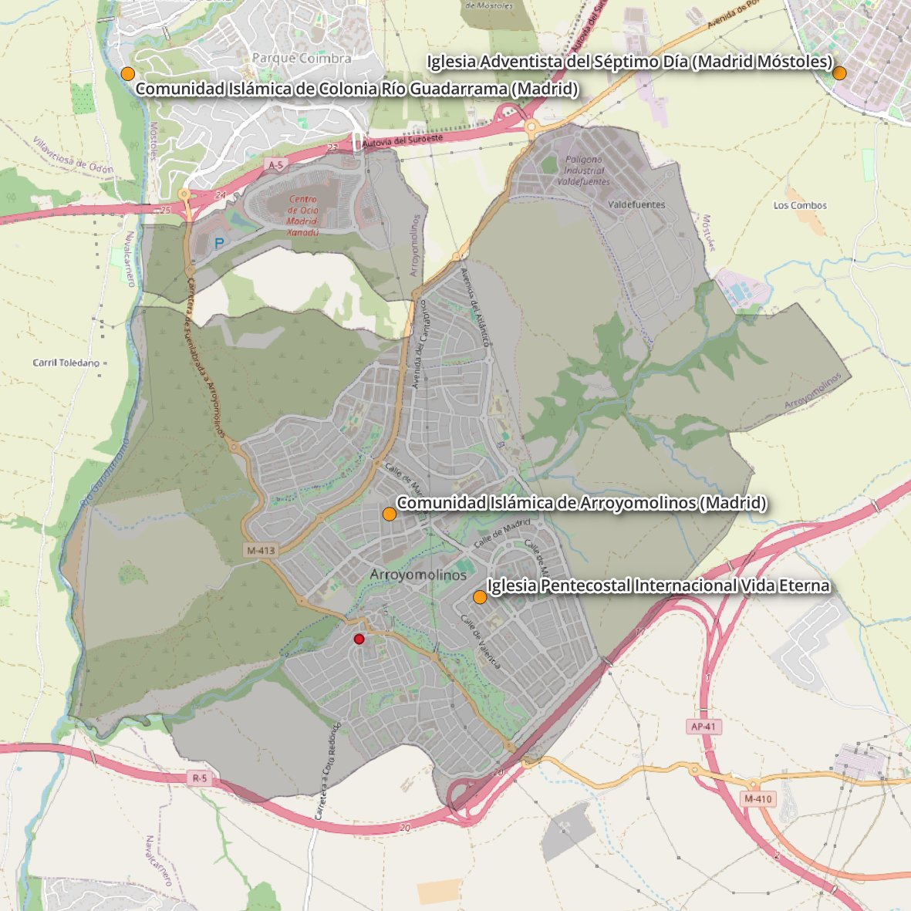
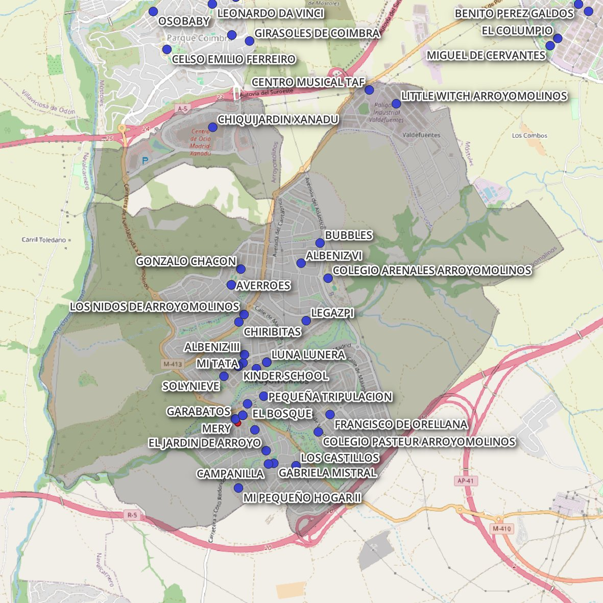

Puntos de interés en el territorio parroquial
Parroquia Asunción de Nuestra Señora (Arroyomolinos) · Arciprestazgo de Griñón
Entidades religiosas no católicas

2 entidades religiosas no católicas en el territorio de la parroquia.
Evangélicos (1)
- Iglesia Pentecostal Internacional Vida EternaCalle de Adra 7 Bajo A, Madrid
Musulmanes (1)
- Comunidad Islámica de Arroyomolinos (Madrid)Calle de Torrevieja 2 Pt. 03, Arroyomolinos
Fuente: Registro de Entidades Religiosas del Ministerio de la Presidencia, Justicia y Relaciones con las Cortes. Situación en el mapa: dirección geocodificada con CartoCiudad (IGN) o Nominatim (OpenStreetMap).
Centros educativos

23 centros educativos en el territorio de la parroquia (público: 12, privado: 9, privado concertado: 2).
| Centro | Tipo | Titularidad | Domicilio | Web |
|---|---|---|---|---|
| ALBENIZ III | Escuela infantil privada | Privado | Calle Arroyo de los Combos, 32, 28939 Arroyomolinos | Página web |
| ALBENIZ VI | Escuela infantil privada | Privado | Calle de El Grove, 53, 28939 Arroyomolinos | |
| ARROYOMOLINOS (ESC. MUN. MUSICA) | Escuela municipal de música | Público | Calle de la Iglesia, 12, 28939 Arroyomolinos | Página web |
| AVERROES | Colegio de educación infantil y primaria | Público | Avenida de Francia, 159, 28939 Arroyomolinos | Página web |
| BUBBLES | Escuela infantil privada | Privado | Calle de Arousa, 72, 28939 Arroyomolinos | Página web |
| CAMPANILLA | Escuela infantil | Público | Calle Miguel de Cervantes, 106, 28939 Arroyomolinos | Página web |
| CENTRO MUSICAL TAF | Centro autorizado profesional de música | Privado | Calle de Fresadores, 35, 28939 Arroyomolinos | |
| COLEGIO ARENALES ARROYOMOLINOS | Centro privado de educación infantil, primaria y secundaria | Privado concertado | Calle de la Guardia c/v C/ Coruña, s/n, 28939 Arroyomolinos | Página web |
| COLEGIO PASTEUR ARROYOMOLINOS | Centro privado de educación infantil, primaria y secundaria | Privado concertado | Calle de Benicarló c/v a C/ Valencia, s/n, 28939 Arroyomolinos | |
| EL TORREON | Colegio de educación infantil y primaria | Público | Calle de Serranillos, 6, 28939 Arroyomolinos | Página web |
| FRANCISCO DE ORELLANA | Colegio de educación infantil y primaria | Público | Calle Barcelona, 19, 28939 Arroyomolinos | Página web |
| GABRIELA MISTRAL | Instituto de educación secundaria | Público | Calle Miguel de Cervantes, 104, 28939 Arroyomolinos | Página web |
| GARABATOS | Escuela infantil privada | Privado | Calle Navalcarnero, 13, 28939 Arroyomolinos | Página web |
| GONZALO CHACON | Instituto de educación secundaria | Público | Avenida de Francia, 165, 28939 Arroyomolinos | Página web |
| LAS CASTAÑERAS | Colegio de educación infantil y primaria | Público | Calle de Andalucía, 8, 28939 Arroyomolinos | Página web |
| LEGAZPI | Colegio de educación infantil y primaria | Público | Calle de Cartagena, 9, 28939 Arroyomolinos | Página web |
| LITTLE WITCH ARROYOMOLINOS | Escuela infantil privada | Privado | Calle de Santiago Ramón y Cajal, 47, 28939 Arroyomolinos | Página web |
| LOS CASTILLOS | Escuela infantil privada | Privado | Calle Gustavo Adolfo Bécquer, 22, 28939 Arroyomolinos | |
| LUNA LUNERA | Escuela infantil-casa de niños | Público | Calle de Roquetas de Mar, 4, 28939 Arroyomolinos | Página web |
| MI TATA | Escuela infantil privada | Privado | Avenida de las Castañeras, 34, 28939 Arroyomolinos | Página web |
| PASITOS | Escuela infantil privada | Privado | Avenida de las Castañeras, 34, 28939 Arroyomolinos | |
| SUR 1-ARROYOMOLINOS (LUNA LUNERA) | Zona casas de niños | Público | Calle de Roquetas de Mar, 4, 28939 Arroyomolinos | Página web |
| TORCUATO FERNANDEZ MIRANDA | Instituto de educación secundaria | Público | Avenida de Francia, 163, 28939 Arroyomolinos | Página web |
Fuente: registro de centros educativos de la Comunidad de Madrid. Solo se recogen los centros de alta.